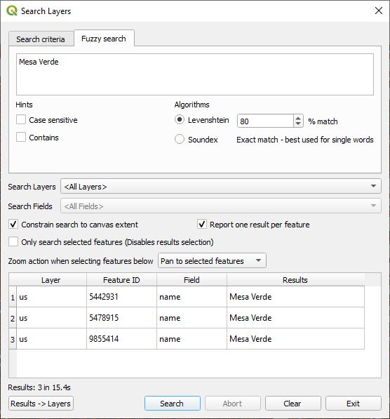

The Search Layers plugin features enhanced textual vector layer searching in QGIS. It provides the ability to search across all layers and all fields. It also features a Fuzzy Search algorithm.
Search Layers is located in the QGIS Plugins menu under "Plugins->Search Layers->Search Layers" or by selecting the tool bar icon. 
The following dialog box is displayed when "Search Layers" is first launched.

Under Search criteria, you can enter up to two search strings. The NOT check box will negate the search results for the applicable string.
Under each search string text box a drop down menu specifies how the search string is to match the contents in the attribute table. The options are:
Case sensitive - When checked the search string must match that of the attribute text case. by default it is unchecked and does a case independent search.
Constrain two search strings to match within an attribute field rather than across attribute fields - This will constrain the search criteria when two search strings are used to match within an attribute field; otherwise, one string may match one attribute field and the other string may match another attribute field. The results are either ANDed or ORed together. Here is an example of a two string search.

Search Layers specifies what layers will be in the search.
You can also specify any layer using the project variable searchlayers-plugin to display only the specified layer(s). The Value of the variable is specified as 'layer-name,layer-name,... '. Layer names that do not exist will be ignored.
You can add the project variable by selecting Settings->Options... from the QGIS menu and then selecting the Variables tab on the left. You click on the bottom right green plus sign to add a new variable. Type in searchlayers-plugin in the first column and then the comma separated layer list in the second column.
Constrain search to canvas extent - Checking this box will constrain the search to look for features that are within the current canvas window view. If you are only interested in the features in the canvas view, this will greatly speed up the search.
Report one result per feature - It is possible that a search string could match the contents in one or more attribute fields. By checking this, only the first match per feature will be reported.
Only search selected features - When checked, the features that are selected in QGIS will be the only ones searched. This is one way to limit a search to a particular area. Note that with this checked, the normal interaction of clicking on a found feature in the list will not select the feature for obvious reasons; however, the zoom or pan to actions will still apply.
Zoom action when selecting features below - When matches are found and are clicked on this affects that action that takes place.
The selected feature(s) will be highlighted unless Only search selected features has been checked. Shift->Click will highlight a range of features. Use Ctrl->Click to toggle whether a feature is selected or not.
Results -> Layers - Clicking on this button will export all the found results into new virtual layer. It is advised to install the Memory Saver Plugin to prevent these layers from disappearing after closing the project.
Search - Clicking on this button will begin the search. In the case of a large data set, clicking on Abort will halt the process. The search will stop after finding 2000 matches.
Note that the search is very quick when selecting a single vector layer under Search Layers and a single field under Search Fields. If this is not the case, regular expression searches are used and are slow. In the future this may change.
If you right-mouse click on a search results entry, a context menu titled Open Record Form will be displayed.
Clicking on Open Record Form will display the feature's attributes. If the layer is in edit mode, then you can modify the feature's attributes and save them. If it is not in edit mode, you will be able to view them but not edit them.
This QGIS plugin makes use of two fuzzy search algorithms. One is based off of the Levenshtein algorithm and the other is a Soundex algorithm. The soundex is really only useful for matching single words that sound the same. This is a screen shot.
